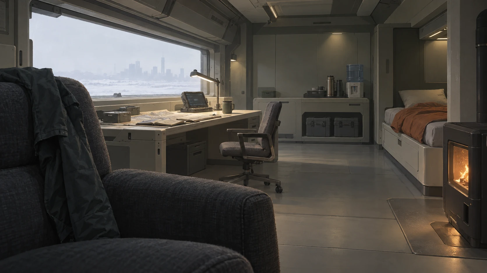
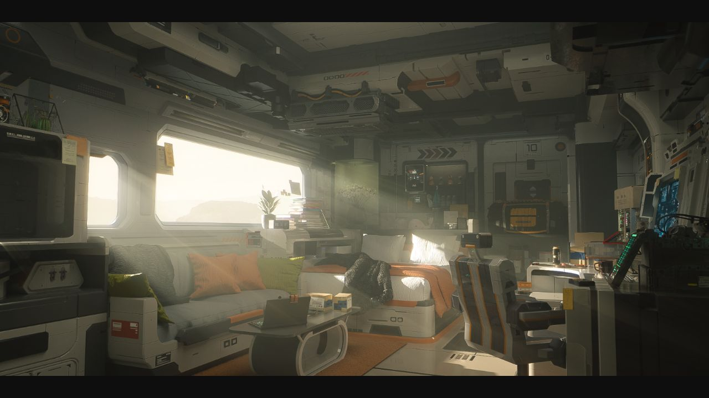
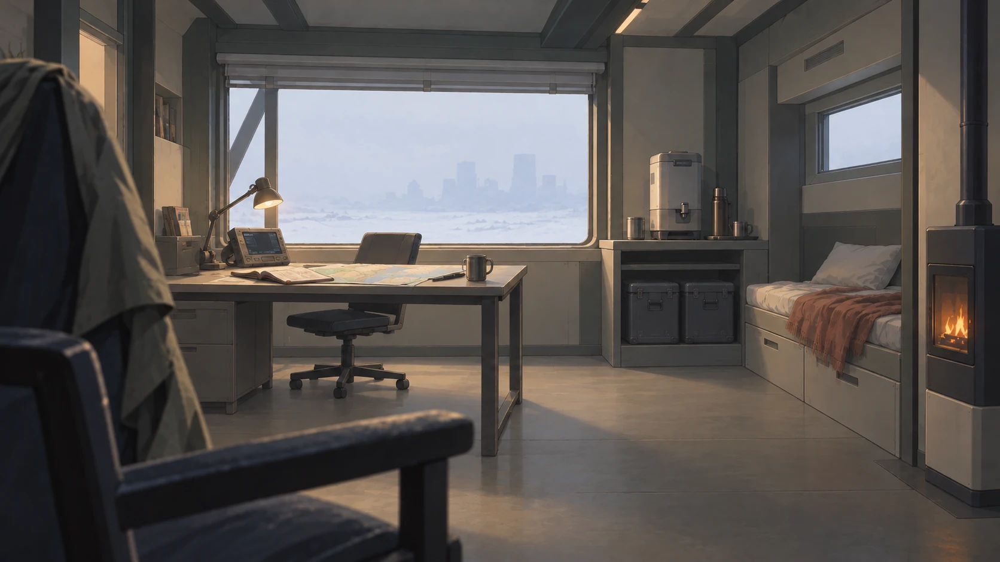

保留大近景椅子，重建整备、储物与起居关系。A12从参考重新起稿，仍是整改候选。


| 观察项 | 少前2参考 | 我们的A12 |
|---|---|---|
| 画法与材质 | 材质由局部受光、软硬边缘与明暗概括区分。 | 近椅织纹、地面与炉体反光仍偏写实；细节密度应向工作区集中。 |
| 中间色 | 灰绿、暖白、冷灰与织物色相互区分，冷暖来自局部光源。 | 全局黄染减弱，但室内仍以灰褐为主，中间色变化不足。 |
| 使用状态 | 软垫、寝具、搭挂和错位叠放形成可停留的生活区。 | 软包椅与床品更自然，桌柜和寝具的排列仍略有陈列感。 |
新稿已改善工作桌尺度、靠墙收纳、通行空间、冷暖分区和城市退虚。下一步应集中修画法与色相关系，避免靠增加零件制造细节。

A12未定稿，未替换游戏运行背景。真实游戏背景仅用于研究；来源为IOP Wiki保存的游戏背景，非项目素材。查看其他真实游戏参考